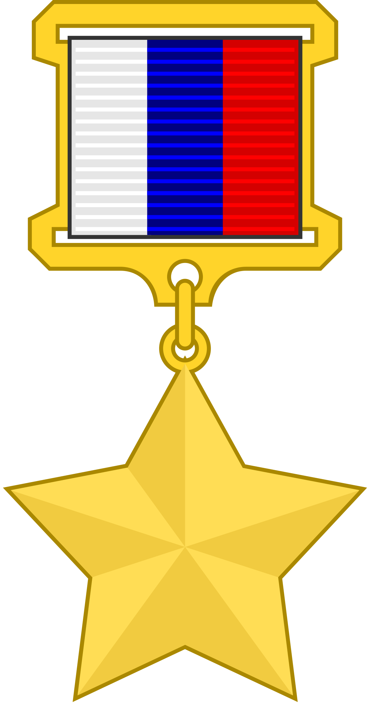

Герои России
Герою Российской Федерации вручается знак особого отличия — медаль «Золотая Звезда».
Звание Героя Российской Федерации, наряду с учреждённым в 2013 году званием Героя Труда Российской Федерации, относится к отдельному виду государственных наград — высшим званиям, которые в иерархии государственных наград Российской Федерации находятся на первом месте.
Первый герой Российской Федерации
Осканов Суламбек Сусаркулович
Указом Президента России от 11 апреля 1992 года за мужество и героизм, проявленные при исполнении воинского долга генерал-майору авиации С. С. Осканову посмертно присвоено звание Героя Российской Федерации
"Золотая звезда Героя России"
Медаль «Золотая Звезда» — государственная награда России.
Учреждена в 1992 году, как знак отличия к званию «Герой Российской Федерации».
Согласно положению, звание присваивается президентом РФ за заслуги перед государством и народом, связанные с совершением геройского подвига.